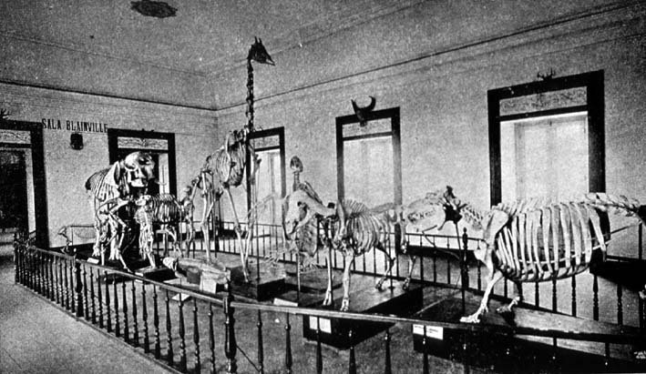

|
|  |
|
João Baptista de Lacerda
, Sala Blainville
|
By contrast, the absence of large palaeontological exhibits at Rio de Janeiro's Museu Nacional was sometimes implicitely cited (both by Brazilians and their southern neighbours) as proof of the country's less advantageous geographical situation, and therefore of its less promising prospects in the 'concert of nations'. The largest exhibit, effectively, was a complete and mounted Scelidotherium skeleton donated in 1886 by Buenos Aires' Museo Público, whose director Karl Hermann Burmeister travelled to Rio himself to supervise its installation. Yet it was precisely the Brazilian museum that was taken by many of the younger Argentine naturalists as an example of scientific excellence, and contrasted to Burmeister's dusty and disorganised institution.
|